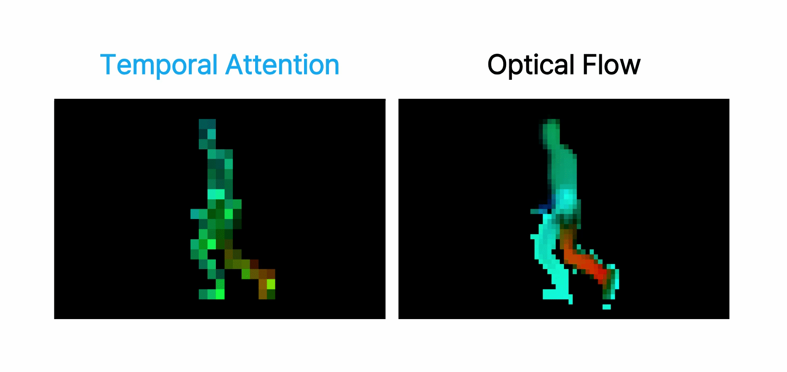
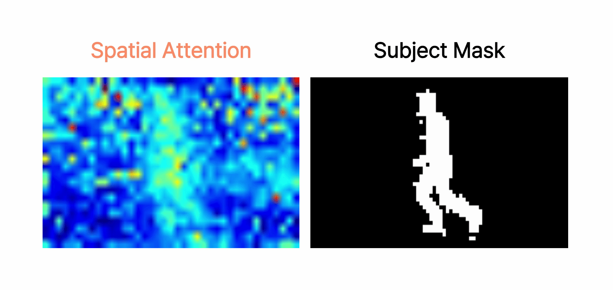
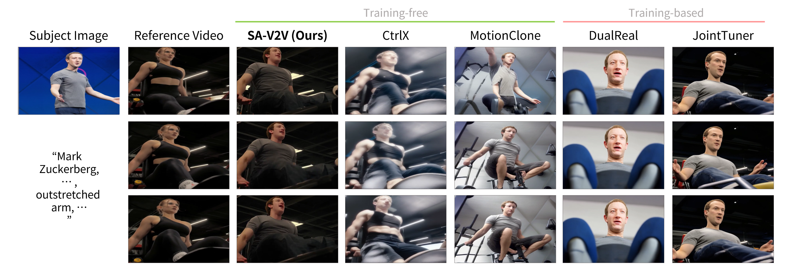

1Department of Electrical Engineering, Sookmyung Women's University, Seoul, Korea 2Department of Electrical Engineering, Korea University, Seoul, South Korea
Figure 1. Overview of SA-V2V Main Results. We introduce SA-V2V, a novel training-free video personalization framework. Drag the vertical slider left and right to compare the raw input video and our personalized output. Use the arrows to navigate through different subject-aware generations.
Abstract
Video personalization aims to generate personalized videos by preserving the motion and background of a reference video while transferring the subject appearance from a given subject image. Such video personalization has achieved tremendous progress alongside recent advancements in video diffusion transformers (DiT). Existing DiT-based approaches predominantly rely on training-based methods that require auxiliary control signals, while independent control over motion, subject appearance, and background remains challenging due to the entangled nature of the unified spatiotemporal attention mechanism. In this paper, we uncover a key structural insight that the spatio-temporal attention matrix of DiT exhibits an inherent functional decomposition—intra-frame blocks primarily encode spatial information, while inter-frame blocks encode motion dynamics. Building on this observation, we introduce SA-V2V, a novel training-free video personalization framework that disentangles and enables independent control over these visual attributes. We propose two guidance approaches: (1) For motion guidance, we present stochastic temporal injection, which leverages inter-frame attention maps to precisely control dynamic trajectories. (2) For appearance guidance, we propose a Target-aware Feature Guidance to enable independent control over subject and background appearance by modulating the synthesized features with masked attention features from the subject image and the reference video, respectively. Extensive experiments demonstrate that the proposed SA-V2V significantly outperforms existing approaches in motion fidelity, subject adherence, and background preservation.
Key Observation: Decomposability of 3D Attention in DiTs
We discovered the decomposability of 3D unified attention in DiTs. Diagonal blocks model intra-frame correlation to capture spatial structure, while off-diagonal blocks model inter-frame correlation to capture temporal motion information. Based on this attention decomposability, SA-V2V achieves training-free video personalization by performing attention feature modulation.
Experimental Verification
Temporal Attention vs Optical Flow

Spatial Attention vs Subject Mask

As shown in the results, temporal attention matches the optical flow to capture temporal motion dynamics, while spatial attention matches the subject mask to capture spatial structure.
SA-V2V Pipeline
SA-V2V appropriately blends the temporal attention and appearance attention features of the reference video and subject image into the attention features of the personalized video. During this generation process, it operates entirely training-free, without the need for fine-tuning, inversion, or additional control signals.
Additional Results

Compared to various training-based and training-free baselines, SA-V2V demonstrates significantly superior performance in preserving subject identity and temporal consistency.
Acknowledgments
This work was supported by the National Research Foundation of Korea (NRF) grant funded by the Korea government (MSIT) (RS-2024-00357197, RS-2024-00335741) and Korea Institute of Planning and Evaluation for Technology in Food, Agriculture and Forestry (IPET) through Companion Animal Intractable Disease Overcoming R$\&$D Project funded by Ministry of Agriculture, Food and Rural Affairs (MAFRA) (RS-2026-25529322).
BibTeX Citation
@inproceedings{park2026sav2v,
title={SA-V2V: Training-Free Subject-Aware Video-to-Video Personalization},
author={Park, Soobin and Yoo, Seohyeon and Kim, Jiwon and Kim, SeonHwa and Jin, Kyong Hwan and Cha, Eunju},
booktitle={European Conference on Computer Vision (ECCV)},
year={2026}
}